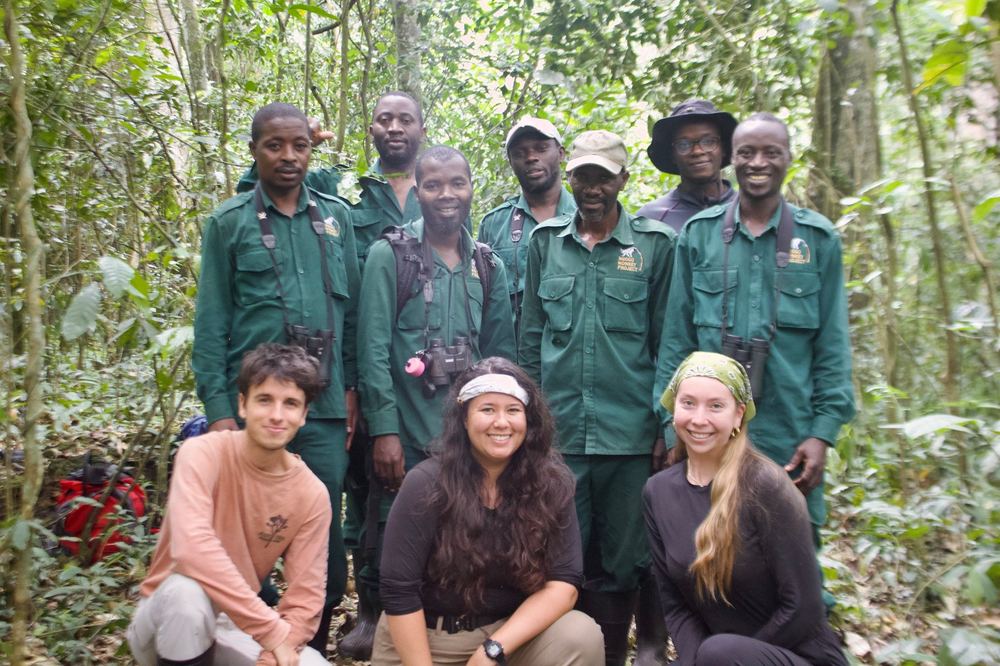
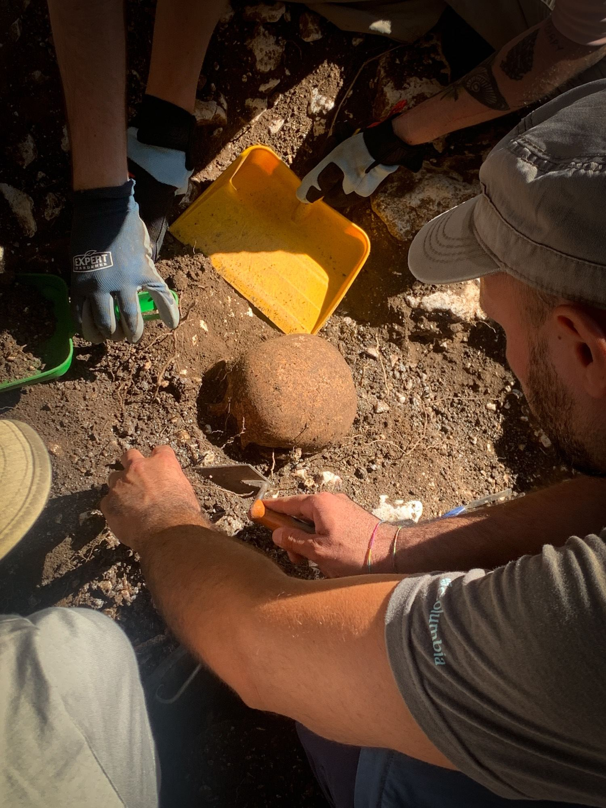
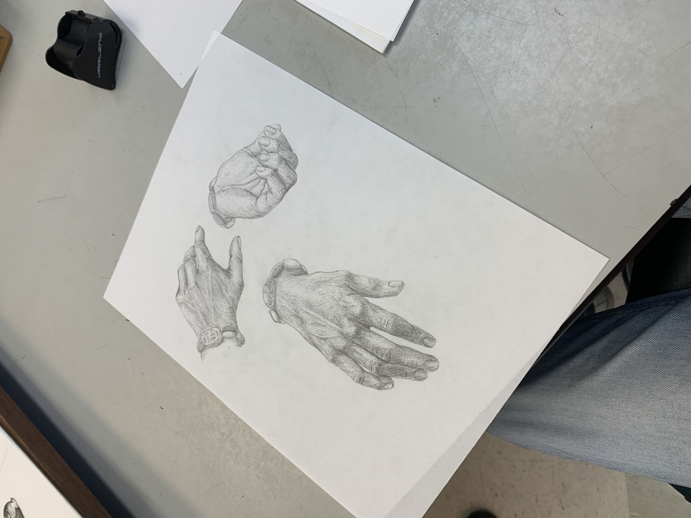
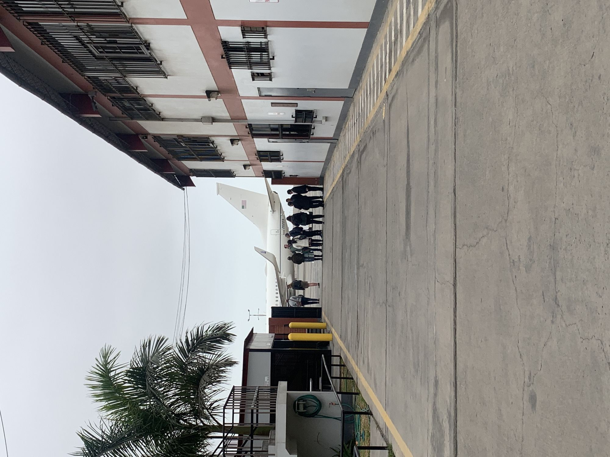
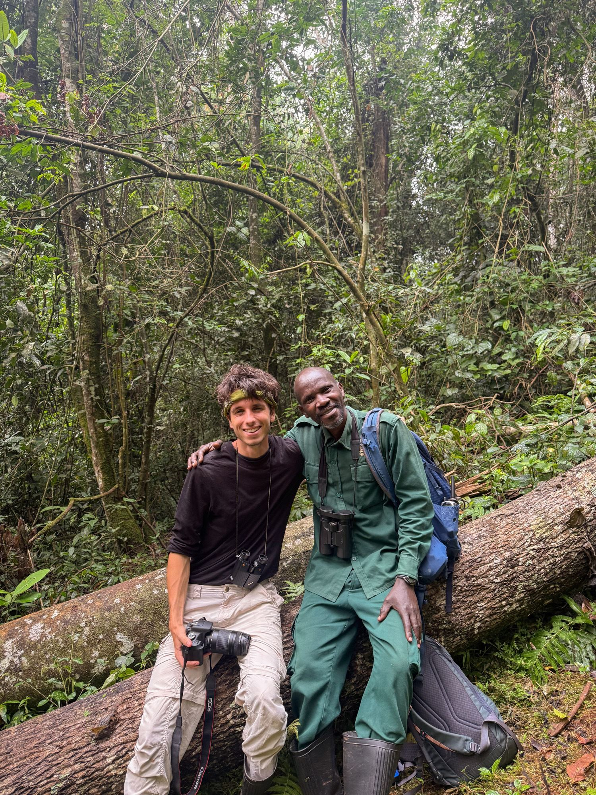

Kibale, Uganda · September 2026
The 2026 Ngogo Monkey Project team: researchers, field assistants, and collaborators whose knowledge made three months of behavioral fieldwork possible. Read more →

Kibale, Uganda · September 2026
The 2026 Ngogo Monkey Project team: researchers, field assistants, and collaborators whose knowledge made three months of behavioral fieldwork possible. Read more →
Santa Barbara, USA · June 2026
Presenting the award-winning Scaliger Castle Viewshed Project at the 2nd Annual UCSB Anthropology Research Symposium. Read more →

Cervia, Italy · June 2025
Excavating an artificial pit whose limits helped reveal a spoliated medieval fortification. Read more →

Lecce nei Marsi, Italy · July 2024
Documenting a Roman-era cappuccina burial during a rescue archaeology campaign. Read more →

Santa Barbara, USA · October 2024
A hypothetical bracelet reconstruction using beads recovered at Tombos in modern-day Sudan. Read more →

Lima, Peru · August 2024
Supporting the presidential pre-advance ahead of the 2024 APEC Leaders’ Summit. Read more →
Archaeology · Anthropological sciences
I’m Sebastian Olmsted, an aspiring archaeologist and researcher based in Nairobi, Kenya. I study how past societies, ecologies, and built environments shaped one another.
I recently graduated from the University of California, Santa Barbara with a B.A. in Anthropology, emphasizing archaeology and integrated anthropological sciences. During a gap year dedicated to research writing, public archaeology, and fieldwork, I am continuing to test the boundaries between scientific analysis and humanistic approaches to landscape.
My experience ranges from GIS visibility modelling of medieval Italian castles and excavations at Neolithic, Roman, and medieval sites to primate behavioral ecology in Uganda. Laboratory work has included Nubian ceramics, paleoethnobotanical materials, and biological samples for hormone and DNA analysis.
Explore the work below, or get in touch with a question or collaboration.
In progress & selected work
Research shaped by landscapes, material traces, and the people who interpret them.
An evolving public-facing project for making archaeological memory and research accessible beyond the field.
Explore project → 02 · Landscape archaeology · GISTesting defensive and symbolic interpretations of 12 medieval fortifications through spatial analysis.
Explore project →
Field notes
Three months of focal follows, experimental trials, sample collection, and collaboration with the Ngogo field team.
The project received first place among lightning talks at UCSB’s 2nd Annual Anthropology Research Symposium.
A gap year focused on research for publication, public archaeology platforms, and further field experience.
Selected record
Across field sites, laboratories, research projects, and international public service.